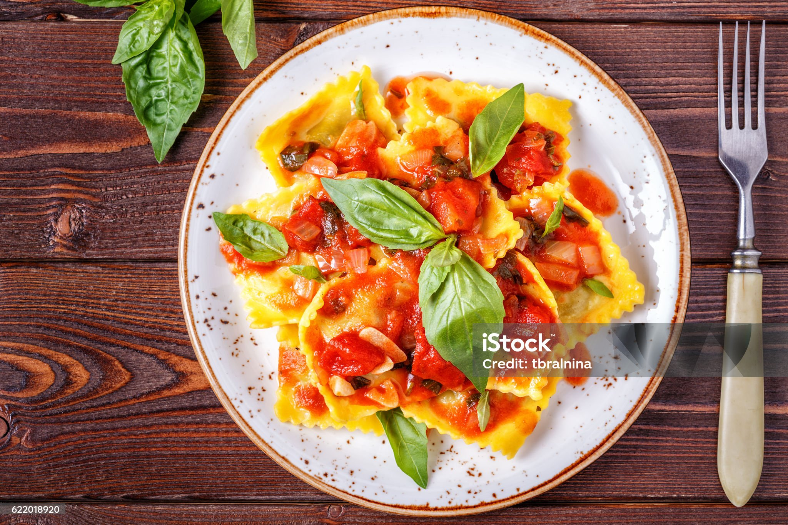
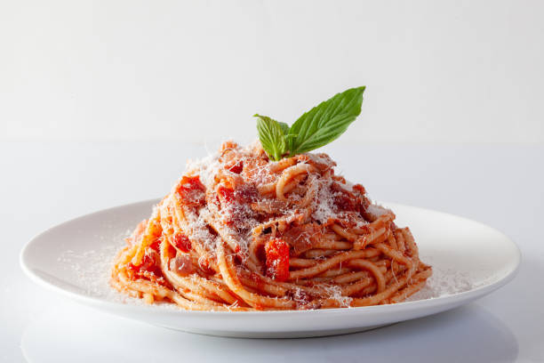

Ravioli
Ingredients
- For the dough: All-purpose flour, salt, eggs, water, and olive oil
- For the filling: Ricotta, Parmesan, mozzarella and provolone cheeses, an egg, and dried parsley
- For the sauce: Olive oil, garlic, prepared basil pesto sauce (you can use store-bought or homemade sauce), heavy cream, Parmesan cheese, and marinara sauce
Recipe
- Make the dough: Make and knead the dough, then form it into a ball. Tightly wrap the ball and refrigerate for at least 30 minutes.
- Make the filling: Mix the filling ingredients together and set aside.
- Make the sauce: Cook the garlic and pesto in oil, stir in the heavy cream, and bring to a boil. Reduce to a simmer, then whisk in the Parmesan.
- Assemble the ravioli: Roll out the dough into sheets. Drop cheese filling onto the dough about an inch apart. Cover with the top sheet of pasta and make a seal around each portion of filling. Cut out individual ravioli, then seal the edges.
- Cook and bake the ravioli: Boil the ravioli in salted water until the dumplings rise to the top and the filling is hot. Drain well.
- Serve the ravioli: Divide the ravioli between bowls, top with the warmed marinara sauce, then finish with the sauce.

Spaghetti
Ingredients
- Spaghetti: Any pasta will work. I prefer using whole wheat or whole grain because it contains fibre and nutrients. If you use regular white pasta, please note the nutritional information of this delicious spaghetti recipe will change. Gluten free spaghetti such as brown rice, or quinoa, will also work but it does cook faster than wheat. So watch it to avoid a mushy mess.
- Tomato sauce: To make good spaghetti, you need a can of cheap, preferably low sodium, tomato sauce that reads “tomato sauce.” Not “spaghetti sauce,” not “pizza sauce,” not “pasta sauce,” not “marinara sauce.” Just “tomato sauce.”
- Parmesan cheese: I highly recommend using a block of fresh Parmesan and grating your own for this simple spaghetti recipe. Pre-grated Parmesan cheese in a shaker contains cellulose as a filler and does not taste as fresh.
- Extra virgin olive oil and fresh garlic: You’ll need lots of minced garlic in this recipe which makes it just as flavorful as a homemade spaghetti sauce.
- Dried oregano, salt, and pepper: A simple seasoning to add to the sauce is all you need.
Recipe
- Cook spaghetti: Fill a large Dutch oven or pot with cold water 3/4 full and bring to a boil. Add 2 tsp salt and spaghetti.
- Ensure pasta does not stick together: Separate pasta with tongs a few times during the first 2 minutes of cooking to ensure it does not stick. Keep cooking uncovered for 5 more minutes or until al dente, stirring occasionally.
- Drain pasta: Test the spaghetti for doneness towards the end by grabbing one strand onto a plate with tongs. Do not overcook until too soft. The key to tasty pasta is cooked pasta with a bite. Drain in a colander.
- Cook garlic: Return the pot to medium heat and add the olive oil, 4 garlic cloves, and oregano. Cook for 20 seconds, stirring constantly. Garlic cooks fast and can easily burn, so don’t walk away. Turn off the heat.
- Add remaining ingredients: Drained pasta, tomato sauce, remaining 1/2 tsp salt, ground black pepper, and 1 more fresh garlic clove. Stir gently until warmed through. That 1 clove of fresh garlic at the end is a must!
- Sprinkle with Parmesan…and serve this spaghetti with tomato sauce immediately!

Tiramisu
Ingredients
- Ladyfingers
- Mascarpone: it wouldn’t be true tiramisu without mascarpone, but if you absolutely must, you could substitute cream cheese.
- Coffee: I use espresso
- Heavy Whipped cream
- Granulated Sugar
- Vanilla extract: or substitute imitation vanilla
- Cocoa powder: for dusting on top
Recipe
- Mix creamy filling. Beat the mascarpone, cream, sugar, and vanilla together until stiff peaks.
- Dip lady fingers. Add the espresso and liqueur (if using) to a shallow bowl and dip the lady fingers on both sides (don’t let them soak–just a quick dip!)
- Layer mascarpone. Smooth a layer of the mascarpone/whipped cream mixture on top of the lady fingers.
- Repeat. Add another layer of lady fingers (dipped in coffee and liqueur) and another layer of cheese mixture. Dust with cocoa powder.

Cheesecake
Ingredients
- Graham cracker crumbs
- Butter (unsalted)
- Cream Cheese (full fat, room temperature)
- Powdered Sugar
- Vanilla
- Heavy whipping cream (cold!)
Recipe
- Start with your crust : I use graham crumbs most often, but you could also use chocolate baking crumbs for a new twist! The melted butter is essential for helping it stick together when you remove it from the pan.
- Beat your cream cheese : room temperature is essential for no lumps! Keep in mind that full fat cream cheese is best. If you compare the packages, you can see that light cream cheese has significantly more moisture and there’s less of a chance it will set. (That being said, I use light cream cheese often and have no issues, but it’s a chance you take).
- Add your powdered sugar and vanilla.
- Whip your cream and add it in: I have always been that person who beats the cream right in with the cream cheese. If you know me at all, I’m not going to tell you you need an extra step unless you absolutely do. In this instance, I’ve tested both ways and haven’t found much of a difference at all, but whipping it separately is a little more foolproof because you can see when you’ve got stuff peaks. I have updated the recipe to reflect this change.
- Chill, chill, chill. And don’t even think about removing it from the pan until it’s set! We don’t want no cheesecake soup here, so plan ahead and be patient.